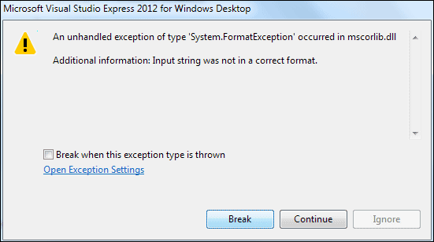

Checking for Blank TextBoxes in C#
<< Continues from previous lesson
There's a problem with the text boxes on your times table programme. If you don't type anything at all in the text boxes, your programme will crash! Try it out. Start your programme and leave the text boxes blank. Now click your button. You should get a strange and unhelpful error message:
Visual Studio Express 2012 will just give your this rather plain error:

C# is highlighting the offending line in yellow. It does this because it can't convert the numbers from the text box and store them in the variables. After all, you can't expect it to convert something that's not there! To remedy this, you can use a method called TryParse.
To convert the numbers from the text boxes to integers, you've been doing this:
loopStart = int.Parse(textBox1.Text);
So you've Parsed the number in the text box, and turned it into an int. But this won't check for blank text boxes, and it won't check to see if somebody typed, say, the word three instead of the number 3. What you need to do is to Try and Parse the data in the text box. So you ask C# if it can be converted into a number. If it can't, you display an error message for your users. Here's some code that tries to parse the data from the first text box. It's a bit complex, so we'll go through it.

The first two lines set up some variables, an integer and a Boolean. The outputValue is needed for TryParse. You are trying to output a Boolean value (true or false) AND the string of text:
isNumber = int.TryParse(textBox1.Text, out outputValue);
So isNumber will be either true or false, depending on whether or not C# can convert the text box data into an integer. If you were trying to parse a double variable your code would be this, instead:
double outputValue = 0;
bool isNumber = false;
isNumber = double.TryParse(textBox1.Text, out outputValue);
The output value that you need is now a double (You're checking to see if C# can convert to a double value). The value of isNumber will still be either true or false (can it be converted or not).
After using TryParse, you then need to check that true or false value:
if (!isNumber)
{
MessageBox.Show("Type numbers in the text boxes");
}
else
{
//REST OF CODE HERE
}
If you remember the lesson on Conditional Operators, you'll know that this line:
if (!isNumber)
reads this:
If NOT true
If you prefer, you can write the line like this:
if (isNumber == false)
The line now reads:
"If isNumber has a value of false"
If isNumber is false, then you display an error for your users. If it's true, then it means that data from the text box can be converted properly. In which case, the rest of the code goes between the curly brackets of else.
If all that is a bit too complex then don't worry about it - you'll get there!
In the next section, you'll be doing something far easier than loops and Conditional
Logic: we'll show you how to add menus to your programmes.
But when you are first starting out, these are the two biggest hurdles to overcome: loops and Conditional Logic. When you understand these two difficult subjects then you are well on your way to becoming a programmer!